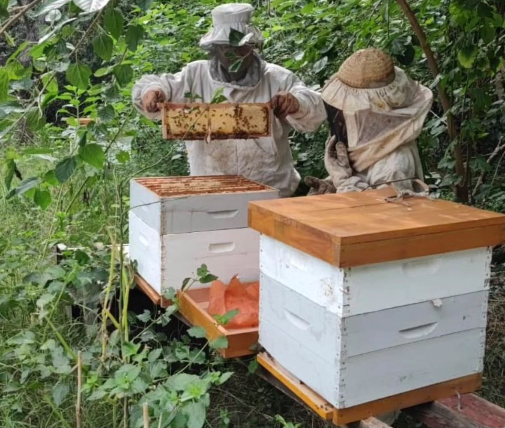

Formación profesional
Todo Natural es llevado adelante por una ingeniera agrónoma que aplica sus conocimientos profesionales en la planificación, el cuidado y el seguimiento de los cultivos.
Todo Natural es un emprendimiento dedicado a la producción y comercialización de alimentos frescos y naturales.

Todo Natural es llevado adelante por una ingeniera agrónoma que aplica sus conocimientos profesionales en la planificación, el cuidado y el seguimiento de los cultivos.
El emprendimiento comienza ofreciendo miel natural y hortalizas frescas, con la intención de incorporar nuevos productos en el futuro.